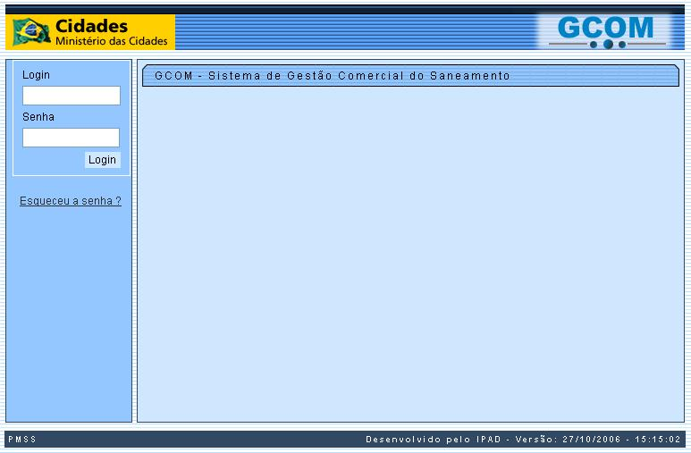

GCOM - Sistema de Gestão Comercial
Companhias de Abastecimento de Água e Saneamento
O GCOM - Sistema de Gestão Comercial para Companhias de Abastecimento de Água e Saneamento, tem como objetivo garantir uma gestão integrada, ampla e eficaz de todas as funções desempenhadas pelas companhias de abastecimento de água e saneamento.O desenvolvimento do sistema foi financiado pelo PMSS - Projeto de Modernização do Setor Saneamento.
Foi desenvolvido com a característica de puder ser implantado em qualquer companhia de abastecimento e saneamento do Brasil, tal o seu grau de parametrização.
O sistema foi desenvolvido com interface 100% WEB, podendo ser acessado por qualquer navegador WEB (WEB Browser) disponível no mercado.
Outro ponto importante a ser ressaltado, é que o sistema foi 100% desenvolvido com ferramentas livres e de código aberto, portanto, não é necessária a aquisição de nenhum software proprietário para a sua implantação.
- Sistema Operacional: Linux
- Banco de Dados: PostgreSQL
- Servidor de Aplicação: JBoss
- Linguagem de Programação: Java
Para ter acesso ao sistema é necessário que o usuário tenha sido previamente cadastrado no sistema.
A partir de qualquer navegador WEB (WEB Browser), entre com o endereço (URL): http://identificação do servidor/gcom
- A identificação do servidor vai depender da definição da equipe responsável pela instalação local do sistema.
Uma
vez aberta a tela
inicial do sistema, você deverá entrar com seu
"Login" e
"Senha", nos campos disponíveis no "menu" lateral
esquerdo da tela inicial; e, depois, pressionar o
botão  .
Veja, abaixo, a tela inicial do sistema:
.
Veja, abaixo, a tela inicial do sistema:

Estando corretos, o "Login" e a "Senha", o sistema vai abrir a tela principal. Clique aqui para obter uma ajuda a respeito do padrão de tela do sistema.
- Caso tenha esquecido a sua senha, clique no "hyperlink" "Esqueceu a senha?", para abrir a tela que irá ajudá-lo a lembrar-se da senha.
- Clique aqui para obter ajudar da tela "Lembrar Senha".
Após o "Login" você terá acesso à tela principal do sistema. No menu lateral esquerdo da tela principal será montado um "Menu" em forma de árvore, que incialmente estará totalmente fechado.
Ao clicar na palavra "Gcom" do
"Menu", o sistema
irá abrir as opções que
estão
disponíveis para você. Enquanto a figura
 estiver
aparecendo no lado esquerdo do item de "Menu", siginifica que existem
sub-ítens para aquela opção.
estiver
aparecendo no lado esquerdo do item de "Menu", siginifica que existem
sub-ítens para aquela opção.
O sistema apresentará no "Menu" os seguintes Módulos e Sub-Módulos:
- Atendimento ao Público
- Consultar Imóvel
- Registro Atendimento
- Ordem de Serviço
- Ligação de Água
- Ligação de Esgoto
- Hidrômetro
- Cadastro
- Micromedição
- Faturamento
- Cobrança
- Consultar Débitos
- Parcelamento
- Informar Situação Especial de Cobrança
- Critério de Cobrança
- Cronograma de Cobrança
- Comando de Atividade de Ação de Cobrança
- Consultar Documentos de Cobrança
- Resolução de Diretoria
- Perfil do Parcelamento
- Arrecadação
- Aviso Bancário
- Movimento dos Arrecadadores
- Pagamento
- Devolução
- Gerar Movimento de Débito Automático
- Consultar Dados Diários da Arrecadação
- Relatórios
- Cadastro
- Micromedição
- Faturamento
- Cobrança
- Arrecadação
- Segurança
- Segurança
- Acesso
- Transação
- Batch
- Inserir Processo
- Filtrar Processo
- Exibir Status Relatório